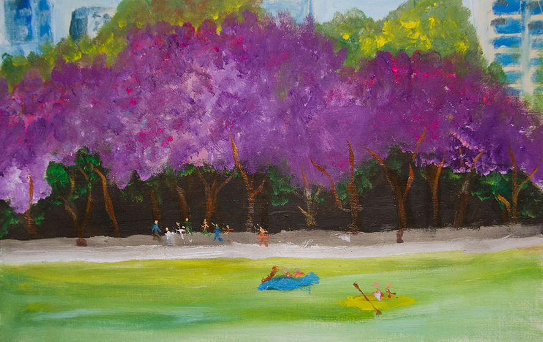

1er LUGAR “Púrpura primavera” Emilio Assad Olivos - 7 años - CDMX
2do LUGAR “Frutos de mi madre sierra” Clara Fernanda García Primo - 6 años - Oaxaca
3er LUGAR “El Tucán” Shelby Faviola Gil Lucas - 7 años - Quintana Roo